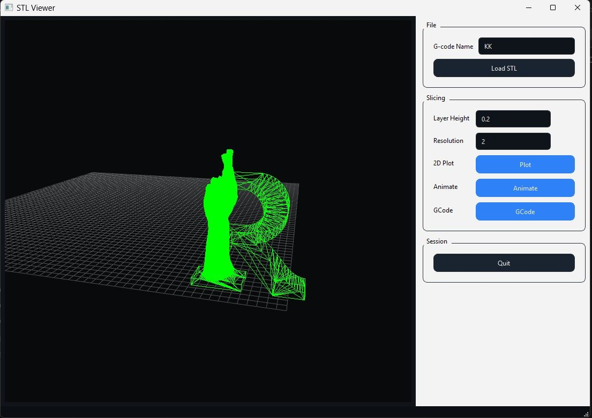

3D Slicer & G-code Generator
An STL-to-G-code pipeline written from first principles.
I wrote my own slicer because the off-the-shelf ones don't let you slice the way I want to slice. The interesting question — what happens when the layer planes aren't horizontal — lives below their abstractions, so I built a smaller pipeline that exposes everything.

What you're looking at
Load an STL, see it sitting on the build plate in the viewer above. Set a layer height and a resolution. Hit slice, hit G-code. Each stage emits its own intermediate state and shows it back to you — you can stop at "layer outlines," inspect what the slicer actually thinks the part looks like at z = 4.2 mm, and then keep going.

Why I wrote my own
Off-the-shelf slicers (Cura, PrusaSlicer, the rest) are excellent at what they do. They're also opinionated about slicing axes — typically Z-up, planar layers. Researching support reduction via tilted or curved slicing planes means going below those abstractions, and at that point, writing a small slicer is easier than monkey-patching a big one.